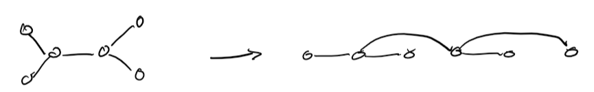
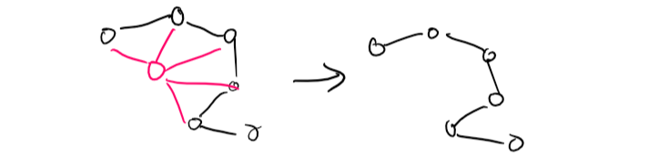
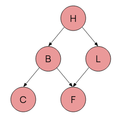
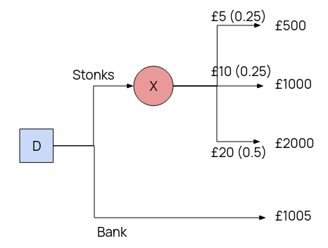

Introduction
AI is a massive module, filled with a lot of important things and redundant fluff. My aim here is to rewrite my notes for the module to remove all of the fluff, which not only makes the task easier for me, but also means there's less filler content. This page assumes some inherent knowledge from AI and its keywords, as well as knowledge of logic from CS130 or CS262 -- it will not do to read it from scratch.
These are also not guaranteed to be complete.
The old long one can be found here.
Looking through the past exam papers, there are 7 overall topics that are included, some more than others, being
- Conditional Probability and Bayes' Theorem
- CSPs
- Graph Searching and Heuristics
- Reinforcement (Q-) Learning
- Knowledge Bases and Rule-based systems
- Partial Order Planning
... I may also do multiagent systems.
Contents
Search
Introduction
- Uninformed Search
- Informed Search
- Cycle Checking and Path Pruning
- More Searching
- Finding Heuristics
- Adversarial Search
- Minimax
- Games with Chance
Search is one of the most essential forms of problem solving. It entails making moves along a problem space (usually nodes in a graph) in order to try get to a goal.
There are two main methods of searching: Informed and Uninformed.
In all cases, assume we have reduced the problem down to a graph of nodes, where searching algorithms is at home. Specifically, often we want to talk about a tree graph. Trees have a root node and some goal nodes further down.
Graph searching is pretty much no different from tree searching, except that we use \(\langle x, y, z \rangle\) to represent paths.
Uninformed Search
Uninformed does not use information from the question - it is a brute force method.
Generic Tree Search
In the general case, a search, starting from the root node of a tree (or from a given node in a graph) can be described as follows:
-
While there are still nodes yet to be expored (candidates for expansion):
- Expand a node according to your searching strategy
- Is it a goal? If so, return success. Else, carry on.
- Return failure
The unexpanded nodes that we can immediately expand to are called the frontier, and are stored in a queue structure -- our search strategy determines how this queue is ordered.
Breadth First Search

In short: expand the shallowest node first.
Frontier queue is ordered by distance from the origin/root. Successor nodes are added to the end of the queue.
For a branching factor \(b\) and the depth of least cost solution \(d\) the time complexity is \(O(b^d)\)... i.e. \(O(n)\) in number of nodes. The space complexity is the same - which can be a big problem if there are lots of nodes.
BFS will always find a solution if \(b\) is finite (complete).
Depth First Search

In short: expand the deepest node first.
Frontier queue is a stack, put successors at the start.
DFS has a time complexity of \(O(b^m)\), where \(m\) is the maximum depth, rather than that of the nearest solution. This can be bad if \(m\) is large. However, DFS's main advantage is its space complexity -- \(O(bm)\) -- only one path needs to be stored, making DFS better where memory is tighter.
DFS is incomplete -- if \(d\) is infinite (or graph has loops) then DFS may never terminate.
Lowest Cost First Search
As the name implies, select a node on the path with the lowest cost first.
The path cost is the sum of all the arcs from the origin to the newly expanded node: \(cost(\langle n_0 \dots n_k \rangle) = \sum_{i=1}^k cost(\langle n_{i-1}, n_i \rangle \).
Frontier is priority queue ordered by cost. The first path to a goal found is the least cost goal. Note this reduces to breadth first when all arcs are of equal cost.
Informed Search
Informed search uses "problem specific knowledge", such as the location of the goal, an estimate of distance, etc., to help inform its search choices. They are usually much better than brute force uninformed search.
Best First Search
Best first search uses a heuristic - some estimate of the final distance for each path to determine the choice of exploration. Heuristics come up a lot, since AI is all about "good enough". There are two variants:
Heuristic DFS picks the node with the best possible heuristic estimate.
Greedy Best First Search picks the path with the best possible heuristic.
And what is the heurisitc? Well, it depends on the situation, but say you're in a maze, and the nodes are intersections / turns. Perhaps the heuristic is the euclidean (i.e. straight diagonal distance) between that corner and the goal square.
However, you might quickly notice that for a maze, the closest "as the crow flies" might be a massive dead end. This is the problem with BFS, where the heuristic may just lead to the wrong path, and if the algorithm is not programmed well enough, forever looping.
The crucial thing is that heuristics are underestimates.
There seems to not be much difference between the two apart from naming, so just default to "Greedy BFS I guess".
Greedy BFS has a time and space complexity of \(b^n\) for a branching factor \(b\) and a path length \(n\). It may not ever find a solution, and thus is incomplete.
A* Search
The very important significant one. A* takes into account both path cost and remaining heuristic when it does its searching.
Let \(g(p)\) or \(cost(p)\) be the cost of the current path \(p\), and the heuristic from the end of p to the goal as \(h(p)\).
Let \(f(p) = h(p) + g(p)\), the total estimate of a path's cost from start to finish, so to say. This is our final evaluation function
A* orders the frontier by \(f(p)\), and picks like that. In this way, it is a mix of Lowest-cost first and Best-first, and is actually pretty damn good.
An algorithm is ADMISSIBLE if a solution existing \(\implies\) the optimal solution is found.
A* is an admissible algorithm.

A good heuristic is better, an overestimate can be really bad but too far of an underestimate is also bad - A* explores every path with an estimate less than the optimal cost, so if there are a lot of paths here, A* can still take a while.
A* thus has a time complexity relative to \(\textrm{error of }h(p) \cdot \textrm{length of solution}\) - which is pretty good, the only problem is that A* is exponential in space, because it needs all nodes in memory.
Cycle Checking and Path Pruning
This is how you stop algorithms which may not halt from not halting.
Pruning a path means removing it from consideration entirely, which saves memory holding unnecessary paths.
Cycle Checking: If your explored path reaches an already explored node in memory, for example if you went a -> b -> c -> d -> b, you can prune the d -> c -> b bit without losing an optimal path solution, since it forms a closed cycle.
Path pruning: If you have a path in memory that goes like s -> b -> x -> y -> z -> u -> h -> m -> p, and later on in searching you find a different path s -> i -> m -> p through a new node i, then you can prune away the first path, since you can use the second one to get to the same destination.
Note though how I didn't say longer and shorter - that's because it's not, it's recency. This is why you have underestimate heuristics - otherwise you won't necessarily get the most optimal solution.
A Monotone Heuristic is where the heuristic is an underestimate for all arcs across a graph. These heuristics are also called consistent, and will never overestimate.
A* Search with a consistent heuristic is needed to find an optimal path.
More Searching
Searching backwards from the goal is effectively the same as searching forward from the start.
Of course if the backwards branching factor is much different from the forwards one, the efficiency of one direction vs another may be vastly different. Sometimes, even, one direction is not available, if the graph is being constructed dynamically.
Provided not, we can get bidirectional search: search from both start and end simultaneously. \(2b^{\frac{k}{2}} < b^k\) after all (b branch. factor, k depth of goal). Of course, the frontiers must somehow meet, so one side is usually a BFS.
Extend to island-driven search, where we pick \(M\) "interesting locations/checkpoints" and search simultanously from all of those. \(Mb^{\frac{k}{M}}\) is faster still -- the problem is choosing said "interesting locations".
Iterative Deepening and Depth First Branch and Bound
We like DFS because low memory, but DFS might follow its own tail into the abyss, so how do we prevent that? We can limit how deep DFS will go - making bounded DFS.
But what if the bound is too shallow? Then, we gradually increase the bound, and rerun DFS, until we get to the goal. This is now Iterative Deepening of the bound.
But this is still a dumb algorithm. What if we add h e u r i s t i c s to find an optimal solution? Suppose we already have a path to the goal. Let's set a bound \(p\) as its cost. If we have a path where the cost + heuristic \(> p\), then clearly, it will never be shorter, and thus is immediately pruned.
Basically, given a known goal at depth \(p\), no nodes with depth \(> p\) will even be encountered. Set the bound to less than \(p\) and keep searching at a decreasing depth until we can't find goal nodes any more.
Rinse and repeat until we have no more shorter paths than our \(p\). That is our optimal solution, and this is Depth First Branch and Bound.
(For a known state space with unknown goals, then just put the bound at the max depth, to save researching anything)
Finding Heuristics
Heuristics are underestimates, but the closer the underestimate the better. A heuristic of 0 is no better than a dumb search. Finding heuristics however is difficult, good ones even more so, but there are a few approaches:
Relax the problem: try a less restrictive version of the problem. If it's a maze, imagine there's no walls and you can fly. If it's a 15-tile game, imagine you can move tiles through others.
Combine heuristics: If you have several different admissible heuristics, combine them and use the best one out of them for each individual state as your final value.
Statistics: Actually run simulations to try get data estimates. This is however NOT ADMISSIBLE, but can be good enough.
Adversarial Search
Often we have games where multiple agents compete. In a competitive game, agents must deal with contingencies
Time is of the essence: there is often not enough time to think through everything properly.
Thus we have uncertainty. Whether from opponent moves, insufficient time, or even the random chance nature of a game (such as dice). This makes them more interesting.
Formally, we view a game as
- An Initial State: board position, and player to move
- Operators set, for legal moves
- Terminal Test for game conclusion
- Payoff function to numerically evaluate terminal states. For noughs and crosses, we could have +1 win, 0 draw, -1 lose.
Minimax
Consider a game of noughts and crosses, between two players, Min and Max. If Max wins, Max gains a point. If Min wins, Max loses a point. In this way, this is a zero sum game.
Max must form a strategy that will try to maximise its points, whilst Min does the opposite.
Since there is no random chance, and the search space is small, we can afford to make perfect decisions. This considers the entire state space.
Create a search tree simulating Min minimising, Max maximising, repeat until you reach terminal states. The terminal values propagate up by:
- If the node is a min node, take the minimum of the children
- If the node is a max node, take the maximum of the children
Hence, Minimax.
For two players, a minimax search tree is a two-ply game tree, since two "ply" (layers) make one full round.
\(\alpha\beta\)-pruning
\(\alpha \beta\)-pruning is based on minimax, and gets its name from the utilities on the min-max tree.
- \(\alpha\) is the best choice along the path for Max
- \(\beta\) is the best choice along the path for Min
The pruning part comes from when we search through the search tree. In short, if we discover a node which makes a path objectively worse than any other already found, we don't bother to search more on that path, and prune it out entirely - terminate the recursive call.
The efficiency of this depends on how we search -- using good heuristics may help \(\alpha\beta\)-pruning to become very efficient.
Imperfect Decisions
The biggest problem we have left is that sometimes, we're not afforded the time to search the whole tree, which \(\alpha\beta\) still has to do. Thus we need some sort of way to accomodate this, usually including
- A heuristic evaluation function to get values for non-terminals
- A cutoff test to determine when to stop.
The evaluation function gives an estimate of expected utility -- usually by calculating "features", which are game dependent.
The simplest cutoff apprach is fixed depth, a slightly better method would be to iteratively deepen until time runs out.
Alternatively, we can base everything off quiescent states -- those which are not likely to change in value. Non-quiescent states are expanded until quiescent ones are found, which are resolved with an evaluation function. This extra search is called the quiescent search.
Quiescent Search's main problem is the horizon problem -- faced with unavoidable damage, it thinks stalling is advancing -- we can mitigate this by instead picking the least worst non-stalling move.
Games with Chance
Many games, like Backgammon, contain chance. We must alter our tree to include chance nodes, and take the expected value of all possible moves for each possibility.
Generally represented as \[ \textrm{expMinMax}(n) = \begin{cases} \textrm{utility}(n) & n \textrm{ is terminal node} \\ \max_{s \in \textrm{successor}(n)}(\textrm{expMinMax}(s)) & n \textrm{ is node for Max} \\ \min_{s \in \textrm{successor}(n)}(\textrm{expMinMax}(s)) & n \textrm{ is node for Min} \\ \sum_{s \in \textrm{successor}(n)}(P(s) \cdot \textrm{expMinMax}(s)) & n \textrm{ is chance node} \end{cases} \]
Monte Carlo
Monte Carlo tree search is an improvement on \(\alpha \beta\)-pruning which addesses some of the latter's limitations, namely
- High branching factors reducing depth of search
- difficulty defining an evaluation function
Estimate the value of a state from the average utility of many simulated games (playouts) from the start state.
By playing games against itself Monte Carlo can learn which states often lead to which outcomes, rather than the programmer having to come up with some function.
The way moves are made during playouts is called playout policy, and can vary depending on games.
Pure MTCS performs N simulations from the current state, track which moves from current position has highest win %.
As N increases, this converges to optimal play.
A pure MTCS is usually infeasible, given the large amount of processing power needed to run. Thus, a selection policy is applied to focus simulation on important parts of the game tree.
To balance exploration (simulating from states with few playouts) and exploitation (simulating from known good states to increase accuracy of estimate).s
steps:
- Selection: starting at the root, choosing a move via policy, and repeat moving to a leaf
- Expansion: grow tree by generating successor
- Simulation: Performing a playout from the newly generated successor node (determine the outcome, do not record moves)
- Backpropagation: Use the result to update values going back up to the root.
Repeat for either a fixed no. of iterations, or until we are out of time, and return the move with the highest number of playouts.
Upper confidence is a selection policy based off the upper confidence bound formula UCB1: \[ UCB1(n) = \frac{U(n)}{N(n)} + C \sqrt{\frac{\log (N \cdot \textrm{parent}(n))}{N(n}} \] \(U(n)\) is the total utility of all playouts with \(n\) as the starting node (from n), \(N(n)\) as the number of playouts from n, parent is self explanatory, and \(C\) is a set constant, which is used to balance exploration with exploitation.
The computation time of a playout is linear in depth of tree.
Constraint Satisfaction
Variables and Constraints
Given a set of variables, an assignment is a function from variables to their domain. A total assigment is a function that assigns all variables in the set, and partial is thus self-explanatory.
Constraints limit what combination of variables are possible.
A constraint \(C\) is a relation \(R: S \longleftarrow \{T, F\} \) over a scope \(S\), which is a set of variables.
Any assignment \(A\) on the superset \(2^S\) satisfies \(C\) if all variables in S then map to true.
A constraint can be unary (1 var), binary (2 vars), or more.
CSPs
A Constraint Satisfaction Problem has a set of variables, a domain for every variable, and a set of constraints. We will be working on finite CSPs only.
Many things are reducible to CSPs, notably 3-SAT, which is covered in CS260. CSPs are usually NP-hard, thus difficult to solve efficiently, and thus, like the rest of AI, our algorithms are heuristic based and "good-enough" based.
Generate and Test
The most naive method of solving CSPs. As the name suggests, generate a total assignment (randomly or systematically), and test if it violates any constraints.
Whilst this is stupid easy, it has a complexity of \(O(\textrm{horrible})\).
Backtracking
So generate and test is horrible, maybe we do something smarter. CSPs can be reduced to trees, where nodes are assignments of values and neighbours are gotten by selecting a different node, and assigning it to something else.
As soon as we hit an invalid (partial) assignment, backtrack one and try a different one, like the example below.
Example. Suppose we have a CSP with variables \(A, B, C\), each has domain \(\{1..4\}\), and our contraints are \(A < B; B < C\). A backtracking tree might look like the following:
Backtracking is \(O(\textrm{less horrible})\), and is usually good enough for most applications *cough* something beginnning with c.
If dumb backtracking is not good enough, we can use a heuristic-based search:
- MRV | Minimum Remaining Value: pick the variable with the fewest possible values; "fail first"
- Degree: (backup to MRV) pick the variable with most constraints
- LCV | Least Constraining Value: for a variable, pick the value that rules out the least other values
Consistency Algorithms
Sometimes, some assignments will always fail nomatter what. For example, if \(A, B = \{1..4\}\) and \(A < B\), the assignment \(A=4\) is always invalid. Thus to speed up backtracking we can strip these domain values out as we go along.
These algorithms work on a constraint network, where nodes are variables (annotated by domain) and arcs are constrains connecting variables.
If you have more than just binary constraints you can have constrains as their own square nodes and connect round variable nodes instead.
Arc Consistency
(Generic) Arc Consistency (GAC) is the one algorithm, and the goal is to make everything "arc consistent":
A variable is domain consistent if all unary constraints (loops) are satisfied. A variable is arc consistent if the constraints on all arcs between it and other variables are satisfied as well.
- GAC keeps track of a to-do list of unconsidered arcs, which are initialised to all arcs in the graph.
- Every iteration until the todo list is empty, we pick and remove an arc from a variable X to a constraint \(c\) and make it consistent. If, however, this changes the domain of X, do the next step:
- For all other constraints \(c'\), we need to make sure that every other variable apart from X (\(Z \neq X\)) are satisfied again -- i.e. adding them back to the to-do list (if not there already).
Regardless of arc selection order, the algorithm will terminate with the same arc-consistent graph and set of domains. Three cases will happen:
- A domain becomes \(\varnothing \implies\) no solution to CSP
- Each domain has 1 value \(\implies\) unique solution
- All or some domains have multiple values \(\implies\) we do not know the solution and will have to use another method to find it
The time complexity of such an algorithm is \(O(cd^3)\) for \(c\) constraints and a \(d\) domain size ~ linear in \(c\), which is efficient enough.
The space complexity is \(O(nd)\) for \(n\) total variables.
Domain Splitting
Domain splitting splits a problem into two separate (disjoint) cases, solving them separately, and combining them.
Take a variable \(X \in \{T, F\} \), we can split this into two "worlds" where \(X=T\) and \(X=F\), solve those worlds, and combine all the valid results. With a domain of \(\{1, 2, 3, 4\} \) however, we can split into 4 worlds, or just 2 where \(X =\{1,2\}; X=\{3, 4\} \). If we only need one solution, we can just stop as soon as one world finds valid-- heeyyy wait, isn't this just "backtracking"?
Well, yes. Or rather, backtracking is a special case of domain splitting.
Interleave arc consistency here between every split/expand for best results.
Variable Elimination: Trees
A regular CSP takes \(O(d^n)\) to solve (\(d\) domain size \(n\) variables), but if we split this into \(\frac{n}{c}\) subproblems of \(c\) variables, suddenly this becomes drastically quicker (\(O(\frac{n}{c}d^c)\))
Specifically, an acyclic CSP can be solved in \(O(nd^2)\) by:
-

- Choose a variable as root, and order from root to leaves such that all nodes' parents preceeds them in ordering
- for \(j = 1 .. n\), make node\(x_j\) consistent with its parents
If we don't have a tree, but can make a tree by removing one or two nodes, we can instantiate those variables, prove their consistency, and then remove them from consideration.

Conditioning is removing one variable by the above method.
Cutset Conditioning is conditioning done to a set of variables (nodes).
Variable Elimination and Cutset Conditioning
More generally, we can eliminate a variable by passing its effects off onto the constraints of its neighbours.
The idea is to collect all constrains on a variable X and natural join them to make one \(, c_x(X, \bar{Y})\) (Y-bar are neighbours to X), then project only those \(\bar{Y} \) variables. (CS258 Relational Algebra)
Efficiency depends on selection, and variable elimination only works when the graph is sparse.
The treewidth is the number of vars in the largest relation. The graph treewidth is the minimum treewidth of any ordering. VE is exponential in treewidth.
Cutset conditioning is the process of doing this with cutsets (sets of variables)
The efficiency of cutset elimination is O(number of cutsets × time per tree), that is,
Given domain size \(d\), number of nodes \(n\), and a cutset size \(c\), the efficiency of cutset conditioning is \(O(d^c (n-c) d^2 )\).
Conditional Probability and Bayes
Probability
First of all, see Probability from CS130 since this needs probability spaces \(\Omega\) annd expected values of random vars \(E[X] = \sum_{s_i \in \Omega} P(s_i) X[s_i] \).
Recall that for conditional probability: \(P(A|B) = \frac{P(A \land B)}{P(B)}\). If \(P(A|B) = P(A)\) and \(P(B|A) = P(B)\) then they're independent.
From which we get Bayes' Theorem \(P(A|B) = \frac{P(B|A)P(A)}{P(B)}\) (provided neither \(P(A), P(B) = 0\)).
Where \(P(B) = P(B|A)P(A) + P(B|\lnot A)P(\lnot A)\) -- the possibility of B given all occurences of A.
If A is instead split into mutually exclusive, exhaustive states \(a_1 \cdots a_n\) rather than a true and false, then we can extend the equation for \(P(B)\) to be a sum \(\sum_{i=1}^{n} P(B|a_i) P(a_i)\)
Note also the chain rule: \[P(a_1 \land a_2 \land \dots \land a_i) = P(a_1) \times P(a_2|a_1) \times P(a_3|a_1 \land a_2) \times \cdots \times P(a_i|a_1 \land a_2 \land \cdots \land a_{i-1} )\]
The joint probability distribution \(P(A,B)\) is a probability dist over A, which has \(n\) states, and B, which has \(m\) states. Thus, for every A state \(a_i\), we have \(m\) entries in the prob. dist for every possible B state (i.e. it's \(A \land B\)).
To work out \(p(a_i)\) from \(p(A, B)\) do \(p(a_i) = \sum_{j=1}^{m} p(a_i, b_j)\). This is referred to as marginalising B out of \(P(A,B)\)
Naturally this is difficult for continuous probabilities. In that case, we have to use integration (that I doubt will actually come up).
Note that conditional independence for some \(X, Y\) given \(Z\) means that \(P(X, Y|Z) = P(X|Z) \cdot P(Y|Z)\).
Inference
Probabilistic inference is about computing values for queried propositions given observed evidence.
- Let \(X\) be our query variable, and \(E\) be our evidence variables with observed values \(e\).
- Let \(Y\) be other, unobserved variables, with some values \(y\)
- We want \(p(X|e)\): \[p(X|e) =\frac{p(X, e)}{p(e)} = \alpha \sum_{y}p(X, e, y)\] Where the \(\frac{1}{p(e)}\) multiplier is called the normalisation constant (sometimes written \(\alpha\)), \(p(e)_= \sum_{x, y} p(x, e, y)\).
Now, this is probably meaningless when just presented in theory, so below is an example.
Example. Given the following table, we want to calculate P(cavity|toothache).
| Toothache | ¬Toothache | |||
|---|---|---|---|---|
| catch | ¬catch | catch | ¬catch | |
| cavity | 0.108 | 0.012 | 0.072 | 0.008 |
| ¬cavity | 0.016 | 0.064 | 0.144 | 0.576 |
Note we have an "unobserved" (irrelevant variable) catch. Then, to work everything out:
- p(cavity \(\land\) toothache) = 0.108 + 0.012 = 0.12 (marginalising catch)
- p(cavity \(\land\) ¬toothache) = 0.008 + 0.072 = 0.08
- Then p(cavity) = 0.108 + 0.012 + 0.016 + 0.064 = 0.2
- p(toothache) = 0.108 + 0.012 + 0.016 + 0.064 = 0.2
- Thus p(cavity|toothache) = \(\frac{0.12}{0.2}\) = 0.6.
For more complex examples, this type of enumeration may become incredibly difficult - thus we need some sort of graphical method to represent and take advantage of conditional independence.
 Since often events lead to other events which lead further in a chain, we can represent this graphically.
We want an acyclic graph, where each node corresponds to one variable in our probability distribution.
This graph should then satisfy the markov condition:
Markov Condition: For all variables \(V\), \(V\) is conditionally independent of all its nondescendants, given its parents: \(P(B,C|H) = P(B|H) \cdot P(C|H)\) because C does not descend from B.
This reduces vastly the number of conditional probabilities we need to work out, and simplifies the ones we do -- only the conditional probabilities \(P(X|PA_X)\) (given the parents of X) need to be calculated.
This type of graph is a Bayesian Belief Network -- directed, acyclic, showing influence, and in total representing a full joint prob. dist.
When building a BBN, order of nodes matters (different order = different complexity) -- we really only want a node to depend on only those before it. Then, we can use chain rule principles and only the parents function \(PA_X\) to define the joint probability: \[P(X_1, X_2, \dots, X_n) = \prod_{i=1}^n P(X_i | PA_{X_i})\]

Noisy OR
Even still, local probability distributions tend to grow very quickly (\(O(2^n)\)) -- simplify using "canonical interaction" models like Noisy OR.
Noisy OR:
- Describes set of \(n\) clauses \((x_1 .. x_n\) and their common effect (descendant) \(y\)
- Assume each \(x_i\) is sufficient to cause \(y\) regardless of state of other clauses: independence.
- Thus \(p_i\) (prob. of causing \(y\) rel. to \(x_i\)) \(= P(y|\lnot x_1, \dots, x_i, \lnot x_{i+1}, \dots, \lnot x_n)\)
 Shown on the right is a BBN concerning Fatigue, Bronchitis, Lung cancer, and Other causes of fatigue.
Shown on the right is a BBN concerning Fatigue, Bronchitis, Lung cancer, and Other causes of fatigue.
Causal inhibition is where each of the three causes F, O, L, has an inhibitor (not shown): Bronchitis will cause fatigue if and only if the inhibior mechanism for that cause is absent.
Exception Independence is where the inhibiting mechanism for each cause is independent.
And of course, the effect F can only happen if at least one cause is present.
A noisy-OR model adds new deterministic nodes, whose values are exactly specified by parents. We can extend the above BBN into a Noisy-OR tree, add in the inhibitors, and voila.
Course a BBN won't actually show this, and condenses it down into a single probability / probability table.
When constructing a network, only draw causal links from the new node to already existing ones - depending on the order new nodes are added, this wildly changes the number of arcs and thus the complexity.
Reasoning
Different types of reasoning can be done on a BBN:
- Diagnostic Reasoning from symptop to cause: backwards along the arcs. From our evidence reason up until we work out our query -- often involves Bayes' rule.
- Causal Reasoning from cause to symptom: forwards along the arcs -- often involves just reading from the graph.
- Intercausal Reasoning: If a cause and an immediate symptom are observed together, this concerns all other causes of a symptom
- Combined Reasoning if we have to go backwards and forwards simultaneously
A lot of this entials enumeration of possibilities.
Variable Elimination
VE is more efficient than enumeration. VE works over factors, which:
A factor is a function on a set of variables, called the scope of the factor.
Conditional Probability \(P(x|y,z)\) can be described as a factor with scope \(x,y,z\).
If we can (1) order variables, (2) index them, then we can uniquely represent each factor as a 1d array. Ex. the table \begin{array} {|r|r|}\hline x & y & f_0 = P(z=T | x, y) \\ \hline T & T & 0.1 \\ \hline T & F & 0.2 \\ \hline F & T & 0.3 \\ \hline F & F & 0.4 \\ \hline \end{array} Can be represented as the list \(f_0 = [0.1, 0.2, 0.3, 0.4] \). We can then condition, sum, and multiply these.
Conditioning: If we have observed a var with a value, we can define a new factor with reduced scope: Starting with \(P(x|y,z\) then observe \(z=T\), define new factor \(P(x|y,z=t)\) with a scope \((x, y)\), since \(z\) is now known.
Multiplying: If factor 1 has scope \(A, B\) and factor 2 has scope \(B, C\) then we can multiply these together, which is doing a natural join multiply. If \(f_1: A=T, B=F \implies 0.9\) and \(f_2: B=F, C=T \implies 0.6\) then \(f_{new}: A=T, B=F, C=T \implies 0.6 \times 0.9 = 0.54\).
Summing: Eliminating a chosen variable by adding together possible outcomes. Given \(f(X,Y,Z)\) (factor over X, Y, Z) eliminate Y by doing \(f_{new}(X, Z) = f(X, Y=T, Z) + f(X, Y=F, Z)\).
Thus, the VE algorithm goes as
- Construct factor for each conditional probability
- Eliminate each non-query variable:
- If variable has observed value, set it to that and condition
- Otherwise sum it out
- Multiply remaining factors and normalise
Decision Making
BBNs model probabilities, and often these probabilities are used to make decisions. Decision making can also be formalised.
First though, given a set of outcomes \(O=\{O_i ..\} \) of an action \(A\), a utility function \(U(O_i|A)\) assigns a utility to each outcome -- desirability.
The expected utility is a weighted sum of outcomes' probabilities and their utils, \[\sum_i P(O_i|A) \times U(O_i|A)\] And we assume that a decision maker always wants to maximise utility.
The decision maker is an agent, and it must know how good outcomes are relative to each other. These relations should be complete and transitive.
Two outcomes \(\sigma_1, \sigma_2\) are
- Weakly preferred \(\sigma_1 \succeq \sigma_2\), 1 is at least as good as 2
- Indifferent \(\sigma_1 \sim \sigma_2\), 1 and 2 are the same
- Strictly preferred \(\sigma_1 \succ \sigma_2\), 1 is better than 2, we do not weakly prefer 2
Decision Trees
Decision trees have 2 types of nodes. Chance Nodes are circles, and are random variables. Decision Nodes are squares, and represent a set of mutually exclusive choices.
 Example. Suppose you have £1000 to spend. You can put it in the bank, with a guaranteed 0.5% return in a month, or buy 100 shares of OCRCompnay @ $10 a share. The tree looks as follows:
\(EU(X) = 0.25 \times 500 + 0.25 \times 1000 + 0.5 \times 2000 = £1375\).
\(EU(D) = \max(EU(X), 1005) = £1375\)
Thus buy stonks.
Naturally real people have different views on risk vs reward than an agent which goes off dumb numbers and a max function. We can also model this however.
We can change our utility function to instead of being just the straight number, account for the risk involved as well: \[U_R(x) = e^{\frac{-x}{R}}\] Thus with a higher R value for certain options over others, we can represent risk accordingly.
If we have non-numeric outcomes in our decision tree, such as whether or not a suit gets ruined, we can still model this by assigning utility values, often 0 for the least desiresd, 1 for the most desired, and something in between for the others that reflects their undesirability vs their chance to mitigate disaster.
Influence Diagrams
Decision trees can grow exponentially with the problem, and influence diagrams help prevent that.
Influence diagrams have three types of nodes: chance (circle), decision (square), utility (diamond).
An edge to a chance node means its value is probabilistically dependent on value of parent.
An edge to a decision node means value of parent is known when decision made. If parent is decision, then this is chain of decisions. If parent is chance, means the chance has resolved before we decide.
Example. We recreate the buying stock example as an influence diagram. We want to work out the same thing, \(\max(EU(d_1), EU(d_2))\).
\(EU(d_1) = E(U|d_1)= \)
\(P(X=£5) \times U(d_1, £5) + \)
\(P(X=£10) \times U(d_1, £10) + \)
\(P(X=£20) \times U(d_1, £20) = £1375.\)
\(EU(d_2) = E(U|d_2) = £1005.\)
Links from chance -> decision are also known as information links : chance must be known before decision can be made.
For a diagram with these links,
- Add any observed evidence by changing that chance node to \(p=1\) for that outcome,
- For every possible parent occurence, calculate the expected utility for that specific setting,
- Return the final stored table of decision values.
Knowledge Bases and Rule-Based Systems
Introduction
Knowledge Bases
Knowledge bases are stores of facts, in propositional logic. Usually they're stored as horn clauses (of form \(a_1 \land a_2 \land \cdots \land a_n \implies x\)). Knowledge bases are usually denoted \(KB\).
Reasoning is the bridge between the facts, and what can be deduced to be true from the facts. After all, it is difficult to store every true thing. If a proposition \(\alpha\) can be deduced from the KB, we write \(KB \models \alpha\) (KB entails alpha).
That being said, KBs can be represented by different languages, and the expressiveness of the language can determine what we can represent.
The knowledge representation hypothesis is that any mechanical, intelligent agent will have a collection of true propositions, and be able to do formal reasoning on them to deduce new facts.
As mentioned, boolean algebra (and propositional logic) is often used, because it is easy to work with.
Note that the variables themselves have no intrinsic meaning, the user must decide the intended implementation, and thus each atomic proposition would represent one thing the user wants to describe about the world.
Expert Systems
The Expert System was one of the older in-fashion AI models. It's basically a program with a KB that represents knowledge, and can reason (logically) with it.
An expert, a human who has knowledge in the subject, is responsible for entering the base data that the system has to go one (hence, expert system). The user then interacts with the "other side" of the system to input data and query facts.
MYCIN was an old expert system used (well, intended to be used) in medicine. Its knowledge base was made up of rules, of the form
if conditions \(c_1, c_2, \dots\), then, with probability (tally) \(t\), draw conclusions \(x_1, x_2, \dots\)
Data is stored in a tree, and then the system will search through the tree. Each node is a "goal", a condition to be met, and all / some subgoals must be met for the parent node to be.
This type of tree is an and-or tree. In an AND/OR tree, if a nodes' children are connected with an arc between their lines to the parent, it is an AND. Otherwise, it is an OR.
Rules as Knowledge
Rational people act consistently, thus consistent behaviour is seen as intelligent behaviour. For an AI system we can describe these in the form of production rules (i.e. from this state you can do these things).
A canonical system is a formal grammar system based on an alphabet, some "axiom" strings (variables), and a set of production rules - in all effect, a context sensitive language (see 255).
- The alphabet \(A = \{a,b,c\} \)
- The axioms \($ \in \{a, b, c, aa, bb, cc\} \)
- The production rules \begin{align} $ &\longrightarrow a$a \\ $ &\longrightarrow b$b \\ $ &\longrightarrow c$c \end{align}
Where, as seen, $ belongs to one of the starting axioms.
In a KB, we can represent knowledge through our "alphabet", which conists of three sets of words: O of objects, A of attribtes, and V of values of attributes.
Our grammar here is based on object-value-attribute triples, where we can have
- (object attribute value) or
- (object (attribute value) (attribute value) ... )
Our working memory is the knowledge base. It stores strings of facts (axioms), which define the initial state. It also stores production rules, to allow transitions from one state to another.
Each fact is a working memory element, and can be interpreted as an existential first-order logic: (student (name John) (department computerScience)) means the same as \(\exists x : student(x) \land (name(x) = \textrm{John}) \land (department(x) = \textrm{computerScience})\)
Production rules are then effectively if-then statements.
The CLIPS syntax is one of these rule-representation syntaxes -- and does appear on the exam
Example. Assume the working memory has the rules: (organism means the patient is infected with that organism)
And has the rule
The rule interpreter applies the rules, and it works in a recognise-act cycle. I.e, match the front, and then apply the rule. If multiple things match, pick one according to some strategy (e.g. at random, or through h e u r i s t i c s)
When no actions are left, then the recognise-act cycle stops.
Controlling inference behaviour is deciding what rules to fire if we have multiple. Control can be global -- hard coded into the engine and domain independent, or local -- domain dependent and encoded as "meta rules", rules about how to fire rules.
We fire several rules in order to reach a conclusion, this is an inference chain, like steps of a proof. You can think of all possible inference chains as a tree.
Building an inference chain can be done in two ways: forward chaining and backwards chaining.
Forward chaining starts from data, and tries to fire rules until you reach a conclusion. Irrelevant facts will also be inferred. Backwards chaining goes from a goal and tries to reverse the rules to reach known facts.
Example. Forward chaining is the "bottom-up ground proof procedure". It is logically sound, deterministic, but may unnecessarily fire rules. Suppose we have the facts \(A, B, C, D, E\) and the rules \begin{align} Y \land D &\longrightarrow Z \\ X \land B \land E &\longrightarrow Y \\ A &\longrightarrow X \\ C &\longrightarrow L \\ L \land M &\longrightarrow N \end{align} and wanted to get Z. (note that in the slides the \(\land\) is a & symbol)
We're iterating through the list repeatedly, firing all the rules we can on every pass.
- Fire \(A \longrightarrow X\), known facts now \(A, B, C, D, E, X\)
- Fire \(C \longrightarrow L\), now have \(A, B, C, D, E, L, X\)
- Fire \(X \land B \land E \longrightarrow Y\), now have \(A, B, C, D, E, L, X, Y\)
- Fire \(Y \land D \longrightarrow Z \), now have \(A, B, C, D, E, L, X, Y, Z\)
Note that inferring L was wasteful.
Example. Backwards chaining is the "top-down definite clause proof procedure". We start with a goal, and replace it with the LHS of a rule, until our clause entirely consists of KB facts. This is nondeterministic
Suppose we have the same KB and ruleset as the previous example
- Start with \(Z\)
- Replace with \(Y \land D\) via rule. D is ok, but Y?
- Replace with \(X \land B \land E \land D\) via rule replacing Y. Now X?
- Replace with \(A \land B \land E \land D\) via rule replacing X.
- Thus we fire the chain \begin{align} A &\longrightarrow X \\ X \land B \land E &\longrightarrow Y \\ Y \land D &\longrightarrow Z. \end{align}
In some cases, we want to ask the user at certain points. We can then introduce askable clauses. The idea is it is tedius for the user to input all possible knowledge, and also they don't know what will be relevant, and so askable clauses provide targeted asking at the right time.
Debugging and Conflict Resolution
Sometimes, things go wrong (logically). There are 4 possibilities of wrong logical answers: (1) incorrect, when a clause that should be false is true, (2) not produced, a true clause could not be derived, (3) infinite loop, and (4) irrelevant questions asked, which requires reassesment of the KB.
If the answer is incorrect, then there must be some fact that is wrong, and some rule in the KB that wrongly proved it. We can re-ask the user/expert about all the variables, but if that gets us nowhere, then a rule is wrong.
If the answer could not be derived, then either there's no rule for it, or the rule exists but isn't fired (another variable is wrong). Can solve this recursively by finding all variables that should be true, but are currently underivable.
If the rules are cyclical, a KB can loop. We can convert the KB into a directed graph, and check for cycles, and redo the KB so it does't exist. Forward chaining however cannot loop, since it doesn't fire a rule that doesn't add a new fact.
Conflict Resolution
One rule firing can affect other rules, since it changes the KB.
Conflict Resolution is choosing which rule to fire when multiple possible can be.
The set of fireable rules is the conflict set. This is called the agenda in CLIPS.
A basic (or fallback) approach would be to fire rules in order of appearance. However, then the order of rules has an impact, and there is implicit knowledge that higher rules are more important.
Generally, conflict resolution is based on specificity. The more conditions, the harder to satisfy, thus, match the most specific one.
We can also use recency, the more recent the data, the higher its priority (useful for, say, weather).
We can also enforce refactoriness, a rather confusing way of saying each rule can only be used once.
Conflict resolution can also employ meta knowledge, which are rules about the use of domain knowledge in a system. More often than not dependent on the domain at hand, and determine Represented as meta rules.
Example. A domain independent meta rule can be
A domain dependent meta rule can be
Look... Nathan does medical stuff, ok? Don't ask.
RETE
We want to increase the efficiency of rule matching. Especially as every recognise-act cycle, little is changed, and many rules share conditions.
The idea is to use the Rete (latin for net) algorithm.
Every rule is represented as a directed acyclic graph, based on the characteristics of the antecedent (left hand side), which must be met for the RHS to be fired.
There are two main types of nodes in the body, \(\alpha, \beta\).
- \(\alpha\) nodes are self-contained, that is, they have only one input, and can be thought of as a unary test.
- \(\beta\) nodes are two input, they join together two conditions into one single constraint.
New or changed working memory elements (tokens) are passed through the tree, taking the path that matches best. If the token can make it from the root to the terminal rule node, then that rule can be fired.
Anyway, slides are obtuse, I got this from this article here, have a read if you want.
Rule based systems are
- (+) good because they make for an easy mapping between an expert's knowledge and rule format
- (+) they represent rules as individual bits of knowledge
- (-) however this makes relationships between rules can be unclear
- (-) and it is harder to manage with more rules.
- (+) they separate out processing from knowledge
- (+) and are able to represent and reason with uncertainty
- (-) but each cycle requires a full search through the rules, which can take a while
- (-) and the system cannot learn by itself, and is also easily broken.
Assumption Reasoning
Assumption based reasoning is where an agent makes some assumptions instead of deducing knowledge, such as
Abduction, where an agent makes a hypothesis to explain observations, and
Default reasoning, where "normality" is assumed -- where something is assumed to exist as it normally would (no edge cases) to facilitate processing.
An assumption based framework has two sets of formulae, facts F and possible hypotheses/assumables H. Facts can also include integrity constraints, which musn't evaluate to true.
Using this framework,
- Under default reasoning when the truth of a clause \(g\) is unknown, an explanation for \(g\) will be an argument / observation of \(g\)
- Compared to abduction, where given a \(g\), and we want to explain why it is.
Repeat the assumption process until all our variables are comprised of assumables. However at the same time, we mustn't violate integrity constraints.
Partial Order Planning
Contents
- Reasoning with knowledge
- Planning
- Situation Calculus and STRIPS
- Partial Order Planning
- Heirarchical Decomposition
- Conditional Planning and Replanning
Reasoning with Knowledge
Partial Order planning, or planning with certainty, also uses knowledge bases. Agents who use knowledge bases are knowledge based agents.
KB Agents can be characterised at three levels based on abstraction:
-
Knowledge Level: what is known, regardless of implementation. Most abstract level. We are given
ask()to retrieve data andtell()to input data. - Logical level: where the knowledge is encoded in formal sentences, like propositional logic.
- Implementation level: the actual data structures and whatever.
A simple KB agent can be represented by this pseudocode:
A percept is an observation of the world state. The KB may contain initial background knowledge.
Three functions here abstract away implementation. makePercentSentence encodes the observed percept into a formal sentence. makeActionQuery asks the knowledge base on what action to do at this time with this state. makeActionSentence then tells the query what action was done.
In certain planning, we're interested in worlds where everything is certain - that is, there is no random chance. When there is no random chance, we can reason with absolute certainty.
Below is an example of a game where everything is certain.
Wumpus World is a simple AI game, with an explorer exploring for treasure.
The world is made up of a grid, in which can either be gold, a pit, or Wumpus. The player is an adventurer, who enters and exits from the bottom left square. The player has one arrow, which it can fire in the direction its facing. However, the player can only detect information about the square it is on.
The player can perceive: a breeze, when adjacent to a pit; a smell, when adjacent to the wumpus; glitter, when directly on top of the gold; a scream, if the player kills the wumpus; and a bump, when it walks into a wall.
The player can do: walk into an adjacent square; fire an arrow in a direction (once only); grab or release the gold; and climb out of the room.
The goal is to get the gold, and escape, without falling into a pit (and dying) or running into the wumpus (and dying)
However, in some situations, even after all our logical predictions we cannot be sure of an optimal move. There are cases of no good moves. Imagine in minesweeper where you have two possible mine places, and one mine remaining, and there's no indication from the numbers which one it is.
In this case, we can use a few things. Background knowledge: where we take what we know built into the agent, such as the distribution of mines, to make an educated guess. Or Coersion: where we force a move to reduce the world into a more certain state. In minesweeper, this risks loss as you make a random move. In other games, like wumpus, you can shoot and check if you killed anything. If not, that direction is safe. Thus, you sacrifice an arrow to coerce the world into where you have safe states.
Planning
We can encode all of these states and conditions formally in propositional logic, but, as found out in CS262 Logic, this blows up very quickly to lots and lots of sentences, thus searching through such possible state spaces is incredibly inefficient.
Thus, we use planning. Planning is a different way of, well, planning actions, which does not require searching through a full state space.
Suppose we have an easier problem: We are at home with nothing. We can do all sorts of things, but our goal is to buy milk, bananas, and a drill.
Now, whilst this is easier to us, a search algorithm will be extremely lost. WHat's the first action? We can sit idly staring at a wall, take the dog out for a walk, go wander round the garden, make a sandwich, etc, etc ... since the branching factor may be thousands or more, and path length fairly long, exhaustive searching is infeasible. It may even be hard to use heuristics.
A planning system has a set of sentences for the states, and the goals. It also has actions, which have preconditions, and have effects.
- In search, states are stored in data structures, both the action and goal are hard-coded, and the plan is a sequence from \(s_0\) the start state.
- In planning, states are logic sentences, actions are just "boxes" with preconditions and outcomes, the goal is also a logic sentence, a conjunction, and the plan is just constraints on actions.
The planner connects states and actions. We can even use divide and conquer, where we have several subplans that have little interaction between them -- such as (a) get to the shop and (b) buy stuff in the shop, which are subplans which wouldn't affect each other.
The planning agent
- Updates the knowledge base
- Create a new goal, and a plan, if there isn't already one. A NoOp must exist where the goal is infeasible or achieved
- Once agent has a plan, it will execute it to completion
Situation Calculus and STRIPS
Situational Calcucus is using first order logic to describe change. In SC, the world is viewed as situations - "snapshots" of state. Each situation is made from a previous via an action, and denoted with \(s\).
There are fluents: functions which change with time -- they have a situation in their argument: \(At(Agent, [1,1], s_0)\).
And there are Eternal/Atemporal functions, which do not change and do not have a situation as argument: \(Wall(1,0)\).
Change is represented by a result function: \(Result(action, situation)\).
Possibility axioms: are expressions using function Poss(action, situation), which describes which actions are possible. \(At(Agent, a, s) \land Adjacent(a,b) \implies Poss(Go(a,b), s)\) [Go(a,b): go from a to b]
Effect axioms: are expressions describing what an action can result in. \(Poss(Go(a,b), s) \implies At(Agent, b, Result(Go(a, b), s)\) [the result of going from a to b at state s -- varies depending on the situation]
We can have logical statements about initial and goal states
- The initial state \(s_0\), we can have \(At(Home, s_0) \land \lnot Have(Milk, s_0) \land \lnot Have(Bananas, s_0) \dots\)
- The final condition: \(\exists s_f : At(Home, s_f) \land Have(Milk, s_f) \land Have(Bananas, s_f) \dots\)
All of the abovementioned, possibilities, effects, fluents, etc, all describe change. However, we also need to express when the world stays the same -- this is done via frame axioms.
Frame axioms describe non-changes due to actions. i.e. walking into a wall does not change state. \(At(o,x,s) \land (o \neq Agent) \land \lnot Holding(o,s) \implies At(o, x, Result(Go(x, b), s))\). Note that as before, Result() returns a state, since we need the new state of the world, even if nothing else has changed.
There's a problem with frames, the frame problem, which is... something. Successor-state axioms exist to solve the "Representational Frame Problem", and essentially the way it works is
- Each statement is about a predicate, and not necessarily an action.
- P being true after \(\iff\) An action made P true, or P is already true and remains true.
- e.g.
This gets clunky very quickly, and so most people use a restricted language -- STRIPS.
STRIPS
Strips has a planner, and not a generic theorem prover. It was written in Stanford to solve planning problems.
States are just conjunctions of free literals (which may be assigned meaning).
State descriptions may be incomplete, but usually we work under closed world assumption -- if it's not stated to be true, it is false.
The goal is also a state, and the planner is asked for a sequence of actions to get from the start to the goal state.
Operators are the actual process, and are important. They have three parts:
- The Action / \(Buy(x)\)
- The preconditions / \(At(p), Sells(p,x)\)
- The effect / \(Have(x)\)
Which are displayed like a box, with preconditions on top, effects on bottom, and actions inside.
An operator with variables is called an operator schema -- a "family" of related actions that need to be instantiated with an actual object.
An operator is applicable if we can assign all variables to make the precondition match.
Partial Order Planning
In a standard search, each node is a state. In a planning search however, each node is a partial plan -- that is, an incomplete plan.
Operators act on partial plans by (1) adding a (causal) link from an existing action to an open condition, (2) add a step to fulfill the open condition, and (3) order one step w.r.t. another.
An open condition is any part of a precondition that is unfulfilled.
Some useful terminology are
- Progression: Search forward from initial state to goal (large branch factor, search space)
- Regression: Search backwards from goal (lower branch factor, more complex due to conjunctions in goal)
- Partial Plan: As name implies, is incomplete. Some steps not initialised.
- Partial Order: Some steps are ordered w.r.t. others.
- Total Order: A full list of ordered steps.
POPs work on the principle of least commitment, leaving choices as long as possible. When every precondition is satisfied, then the plan is referred to as complete.
Note that for a precondition to be achieved, there must be no possible intervening step (threats) that undos it -- there are methods to ensure this.
Overview
A problem is defined by a partial plan (the minimal plan), consisting only of start, and finish.
A Partial-Order Planner (POP) is a regressive (backtracking) planner, searching through the plan space. It adds causal links without breaking already existing ones.
-
The initial state is defined by the operator:
Op(Action: \(Start\),HW: Hardware Store; SM: Supermarket
Precond: --,
Effect: \(At(Home) \land Sells(HW, Drill) \land Sells(SM, Milk) \land Sells(SM, Bananas)\))
-
The final state is defined by:
Op(Action: \(Finish\)
Precond: \(At(Home) \land Have(Drill) \land Have(Milk) \land Have(Bananas)\)
Effect: --) -
We have the operators:
Op(Action: \(Go(there)\)and
Precond: \(At(here)\)
Effect: \(At(there) \land \lnot At(here)\))Op(Action: \(Buy(x)\)
Precond: \(At(Store) \land Sells(Store, x)\)
Effect: \(Have(x)\))
Algorithm
Overview:
- Start with minimal plan
- Each iteration, find a step to achieve the precondition (\(c\)) of some step (\(s_{need}\))
- By choosing an operator : it achieves \(c\)
- Add a causal link to the achieved precond
- Resolve any threats
- If this fails entirely, backtrack
Clobbering
A threat, or clobber, is a potentially intervening step that destroys a causal link.
Suppose we have Go(HWS) \(\xrightarrow{c} \) Buy(Drill). Since Go(HWS) makes you At(HWS), and Sells(HWS, Drill). The clobberer is Go(Home), since if that comes between the two actions, it makes you At(Home) and you no longer can buy a drill.
To deal with clobbering, we need to either demote or promote the clobberer. By demote, we mean put it before, and by promote, we mean put it after.
The Blocks World is a classic POP problem. You have some lettered blocks, on a table.
\(Clear(x)\) means that \(x\) does not have anything on it. \(On(x,y)\) means that \(x\) is on top of \(y\).
There's also something called the Sussman Anomaly, which is mentioned as an aside. ඞ
Example. See image below.
Essentially the idea is to build the graph by finding operators whose effects satisfy the prerequisites of the ones after it without conflicts.
Problems
With Strips, we cannot express heirarchical plans, with different level of detail.
Often we also want to give the planner guidance as it's planning, which is difficult.
Condition expressiveness is limited.
We don't have any quantification. We can't express more complex conditions, such as Pickup(bag) also picking up all items in the bag.
Operators are unconditional, thus we can't have one action do something different based on some conditions.
Heirarchical Decomposition
In STRIPS, Time is discrete and actions are instant. Thus, we cannot represent actions which take time.
In the real world, resources are limited and actions have cost, which is not representable in vanilla STRIPS.
Thus we need to extend STRIPS and POP with more fine-detailed control. Go(Shop) is not helpful if you don't know the exact route to the shop, for example. Course, representing everything at fine levels is unfeasible in computation time,
Thus, we extends STRIPS with non-primitive/abstract operators, which are decomposed into primitive steps. These decompositions are pre-determined and pre-stored.
A plan \(p\) correctly implements a nonprimitive \(o\) if it is a complete and consistent plan achiving its effects, given its preconds.
We also want to make operator descriptions more expressive.
Have conditional effects with the when clause: Effect: \(\dots \land Clear(y) \textrm{ when } y \neq Table\).
Any step with effect \(\lnot c \textrm{ when } p\) is a threat to link \(s_i \xrightarrow{c} s_j\). We need to ensure \(p\) is false.
Have Negated goals: to call chooseOperator with a ¬goal. We would need to be careful to avoid writing down all false representations, there should be something that explicitly matches a ¬goal.
Disjunctive Preconditions, allowing selectSubgoal to select non-deterministically
Disjunctive Effects, allowing non-determinism/noncertainty in effects. Possibly addressable via coersion of state.
Universally quantified preconditions and effects - \(\forall x,\,Block(x) \implies \lnot On(x,b)\) vs \(Clear(b)\)
This form of FOL is restricted, closed world assumption still followed. Initial states give all objects a type.
Have Measures (\(Litres(4),\; FuelLevel, \dots\)) -- numeric valued conditions. These are called measure fluents.
Some measures, the planner cannot control. Others, the planner can by producing or consuming. It is generally a good idea to prioritise scarce resources, delaying choosing links where possible. We can pick the steps and do a rough check, before resolving threats, to check for failure without a finished plan.
Time in and of itself can be a resource. We can specify how long each operator takes. The main differences are
- (1) parallel resources \(s_1, s_2\) cost \(\max(s_1, s_2)\) time, not \(s_1 + s_2\) as with everything else
- (2) time never goes backwards -- if deadline breached, might as well stop immediately.
Conditional Planning and Replanning
The real world is not fully observable, static, and deterministic, as we have been assuming before. Usually we need to work with incomplete and incorrect information.
2 solutions:
- Conditional Planning: plan to obtain information with sensing actions. Subplan for each contingency: [Check(thing), if A then do this]
- Replanning/Monitoring: Assume normal states and outcomes. Check the progress during execution, and replan on the fly. Note that unanticipated outcomes may lead to failure.
Conditional Planning
\[[\dots \textrm{if}(p, [\textrm{then }plan_1], [\textrm{else }plan_2]) \dots]\] During execution, check \(p\) against current KB, execute then or else accordingly.
If an open condition can be established by observation, we can add the action, and POP for each possible outcome, and insert a conditional step. \[[CheckTyre(x)]\; KnowsIf(Intact(x))\]
Steps have context, at exec time agent must know the current state. Sensing actions find state, but may also have side effects: putting something in water will make it wet.
A sensing action may have several outcomes. We can use these actions in parameterised plans, which are plans where exact actions are only defined at runtime.
E.g. we have Goal: Colour(Chair, c) \(\land\) Colour(Table, c), and we start with Colour(Chair, none). In our plan, we can sense the colour of the table, then use that colour to paint the chair.
Note that \(c\) is a runtime variable, unknown until sensed.
We can also have maintenance goals, to preserve certain facts: Goal: Colour(Chair, c) \(\land\) Colour(Table, c) \(\land\) Maintain(Colour(Table, mahogany))
We can also branch into loops, etc, and it soon begins to look awfully like a programming language.
Monitoring
The effect of an action might not be as predicted.
We must monitor the actions for failure, as that would ruin our plan. Either the entire plan fails because the action fails to deliver on some precondition, or the action itself cannot run.
Either way, we must replan on the fly.
Plans can fail in two main ways:
- Bounded indeterminacy: unexpected effects can be enumerated :- use conditionaal planning
- Unbounded indeterminacy: too large to enumerate. Can plan for some contingencies, but not all. Must replan when contingency not planned for.
The simplest way to replan is to do it from scratch, but this is inefficient, and may be stuck in a cycle of failue.
Alternatively, we can plan to get back on track. If in the list \(h,i,j,k,l\) action \(i\) fails, then we want to find a way from \(i\) back to the planned list, in teh best possible place.
e.g Start with Colour(Chair, blue), ¬Have(Red) and want Colour(Chair, Red)
- Actions go [Start, Get(Red), Paint(Red), Finish]
- Imagine Paint(Red) fails because you didn't get enough red paint. A replanner to get back on track would try run Get(Red) again to get more red paint.
In some other situations, we may be able to avoid replanning altogether, with some good enough methods such as
- Coersion
- Abstraction -- ignore unknown details
- Aggregation -- treat a large number of individually uncertain objects together as one predictable aggregate object
We can also use Reactive Planning, which abandons domain-independent planning entirely. The agent's knowledge is procedural -- it has a library of partial plans representing behaviours, from which it picks.
Reinforcement Learning
Introduction
Imagine reinforcement learning is like training a pet, except that pet is an AI. You reward it for desired behaviour and punish it for undesirable behaviour. And instead of treats, it receives negative and positive numbers.
Actions have Rewards (and consequences)
Markov Decision Process
Reinforcement learning can be described as a type of Markov Decision Process (MDP).
Markov Decision Processes are based off Markov Chains, which are themselves Bayesian belief networks with variables in a sequence \[s_0 \longrightarrow s_1 \longrightarrow s_2 \longrightarrow s_3 \longrightarrow \cdots\] Where every variable only relies on the one before it. I.e. \(P(s_{i+1} | s_0 \cdots s_i) = P(s_{i+1} | s_i)\).
We augment markov chains to show the actions, and resulting rewards from one state to another.
A MDP consists of
- \(S\) the set of states
- \(A\) the set of actions
- \(P : S \times S \times A \longrightarrow [0,1] \) is a probability function called the dynamics.
- Written \(P(s' | s, a)\), it describes the probability of transitioning to state \(s'\) given it performs action \(a\) in state \(s\).
-
\(R : S \times A \times S \longrightarrow \mathfrak{R}\) is the reward function.
- \(R(s,a,s')\) is the reward for doing action \(a\) in state \(s\) and ending up in state \(s'\).
- \(R(s,a)\) is the overall expected reward of doing action \(a\) in state \(s\), \[R(s,a) = \sum_{\forall s'} R(s,a,s') \cdot P(s' | s, a).\]
")
If the dynamics prob. dist. is the same across time, it is called stationary.
In a fully observable MDP, the agent gets to see the entire current state.
In a partially observable MDP, the agent knows its history of rewards and previous actions, and can indirectly / partially observe the current state.
Valuation
A state leads to an action, which yields a reward.
An agent can explore to gain knowledge, or exploit existing knowledge.
For ease, we initially assume that only the current state is relevant to future states.
Agents can carry out actions forever or for some limit. During this, it gets rewards and punishments as it goes along.
Time is also an important factor. £1000 now is a lot better than £1000 in a year's time, since there's no benefit to waiting a year. The agent will also receive rewards \(r_1, r_2, \dots\) over time.
We want a way to quantify the rewards received and how valuable they are. In this, we use a value measure. And to represent rewards further down the line being possibly less valuable, we introduce a discount factor, \(\gamma \in [0,1]\), which represents how impatient we are.
The discounted return value is a measure of how good a series of rewards is. For a time \(t\): \begin{align} V &= r_1 + \gamma r_2 + \gamma^2 r_3 + \cdots \\ &= r_1 + \gamma(r_2 + \gamma(\cdots)) \\ \textrm{i.e. } V_t &= r_t + \gamma V_{t+1}. \end{align}
Because \(\sum_0^n \gamma^n = \frac{1}{1-\gamma}\) the reward at time \(t\) must be \[\frac{\textrm{min reward}}{1-\gamma} \leq V_t \leq \frac{\textrm{max reward}}{1-\gamma}\] Thus even if you go infinitely far, you only get a finite reward.
What Values do Policies Have Really?
A stationary policy is a function \(\pi : S \longrightarrow A\), where given a state \(s,\; \pi(s)\) specifies the action the agent will take.
An optmial policy is the policy with maximum expected reward (discounted value).
A fully observable MDP with stationary dynamics, rewards, and an infinite/indefinite horizon, will always have an optimal stationary policy.
Introducing \(Q\)
- \(Q^\pi(s,a)\) is the expected value of doing \(a\) in state \(s\), following policy \(\pi\).
- \(V^\pi (s)\) is the expected value of the state \(s\) itself, following policy \(\pi\).
The "Q-value", and the state value, are usually mutually defined, as \begin{align} Q^\pi (s,a) &= \sum_{\forall s'} P(s'| s, a) (R(s,a,s') + \gamma V^\pi(s')) \\ V^\pi (s) &= Q(s, \pi(s)) \end{align}
So uh, if they're mutually defined, how do we know where to start? Usually random initialisation.
The optimal policy value and q-value, denoted by \(Q^*(s,a)\) and \(V^*(s)\), is defined as: \begin{align} Q^*(s,a) &= \sum_{\forall s'} P(s'| s, a) (R(s,a,s') + \gamma V^*(s')) \\ V^*(s) &= \max_a Q(s,a) \end{align} Which also leads to \[\pi^*(s) = \textrm{arg}\max_a Q(s,a)\] argmax: take the action that generates the largest Q value
Since these are defined recursively, the idea is to iteratively converge them to the optimal value.
If we say \(V_k, Q_k\) are "\(k\)-step lookahead functions" - i.e. they work out the value after \(k\) steps, and we set \(V_0\) arbitrarily/randomly, we can compute \(Q_{i+1}, V_{i+1}\) from \(V_i\) and have it converge quickly to the optimum.
This is Value Iteration.
We can amend this to asynchronous value iteration, where each state can be individually updated instead of the whole state space.
These are stored together in an array, of either values \(V[s]\) or more commonly q-values \(Q[s,a] \).
- The sum, for all possible states \(s'\),
- of the probability of ending up in that new state after doing action \(a\) in state \(s\),
- times (the reward of doing \(a\) in \(s\) and ending in \(s'\)
- plus discounted the max Q-value of all possible actions \(a'\) in that new state \(s'\))
This'll converge for every state if every state is visited enough.
Q Learning
Reinforcement Learning, or Q-learning, is flat, explicit state, indefinite/infinite stage, deterministic or stochastic, with complex preferences, being single agent, learned knowledge, and perfect rationality.
For deterministic Q-Learning, it is fairly simple, since no probability \(P(s' | s, a)\) is taken into account. We initialise our table of Q values \(Q[S,A] \) randomly.
Then, observe the current state \(s\). Repeat forever (or until stopped):
- Select and perform action \(a\)
- Get reward \(r\) for state \(s'\)
- \(Q[s,a] \longleftarrow r + \gamma \max_{a'} Q[s', a']; \)
- \(s \longleftarrow s'\)
For nondeterministic, naturally we have to take into account the probabilties of ending in each state after doing an action as well.
Suppose we have a history of values \(v_1, v_2, \dots\), and we want to predict the next, given what we know. The natural way to do this is with running average:
Let \(A_k\) be estimate based on first \(k\) values of \(v\) -- the mean will do: \(A_k = \frac{v_1 + \cdots + v_k}{k}\) \begin{align} kA_k &= v_1 + \cdots + v_{k-1} + v_k \\ &= (k-1) A_{k-1} + v_k \\ A_k &= (1 - \frac{1}{k}) A_{k-1} + \frac{v_k}{k} \\ &= (1-\alpha_k)A_{k-1} + \alpha_k v_k &(\alpha_k = \frac{1}{k}) \\ \end{align} Thus we get, as the temporal difference equation:
An experience is a tuple \(\langle s,a,r,s' \rangle\), that describes an agent in a state, doing an action, getting a reward, and ending up a new state.
This is one piece of data for updating our q-value for \(Q[s,a]\), to give a new estimate of \(Q^* (s,a)\) via \[r + \gamma V[s'] = r + \gamma \max_{a'} Q[s',a'] \]
Note, that what we're doing with \(Q[s,a]\) is just predicting the value based on our past experiences, thus we can use the temporal difference equation to Q-learn:
The \(\alpha\) value was \(\frac{1}{k}\), where \(k\) is a constant, and so we can simply make \(\alpha\) the constant -- which is between 0 and 1, showing how much the agent prizes new information. (No learning happens at 0). This constant will be called the step size.
Q learning will always converge to an optimum ... provided each action and state is encountered enough.
Exploiting is selecting an action that maximises your \(Q[s,a]\), whereas Exploring is selecting literally anything else.
If we only exploit, then we will never learn anything new. If we only explore ... well what's the point of this whole "learning" thing then!? So we need some strategy to balacne exploration with exploitation.
The epsilon-greedy strategy uses a constant, \(\varepsilon\). Choose a random action (explore)* with probability \(\varepsilon\) and exploit with probability \(1-\varepsilon\).
*all random actions are equally selected between, and may include the maximised q-value action
The softmax action selection strategy uses a temperature \(\tau > 0\), and will choose an action \(a\) in state \(s\) weighted with the probability \[\frac{e^{\frac{Q[s,a] }{\tau}}}{\sum_a e^{\frac{Q[s,a] }{\tau}}}\]
Amongst others.
We know that q-values converge however. Thus, exploring has diminishing returns, and so we would want a mechanism that decays our constants over time to emphasise exploration.
SARSA
Q-learning does what's called off-policy learning, meaning values converge regardless of policy. As long as there is enough exploration, there will be convergence. The value of the policy is never learned.
If exploration is dangerous (large negative rewards), this may be undesirable.
On-policy learning learns the value of the policy, including exploration, in order to improve the policy.
Modify the experience tuple to be \(\langle s, a, r, s', a' \rangle\) (hence the name), the equation, and the algorithm accordingly.
The SARSA equation is \[Q[s,a] \longleftarrow Q[s,a] + \alpha(r + \gamma Q[s', a'] - Q[s,a])\] i.e. consider the action taken and not the best possible action